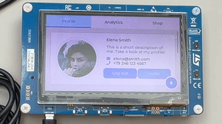

Article
Running LVGL on the STM32F746G-DISCO
Run a full graphical Swift firmware on the STM32F746G-DISCO board, driving an LVGL user interface on the onboard LCD with touch input.
Overview
This example demonstrates a complete baremetal graphical application: it links an ELF binary using lld and a custom linker script instead of the Mach-O toolchain the other STM32 examples use, so it builds identically on macOS and Linux hosts. It uses the LLVM Embedded Toolchain for Arm, the LVGL graphics library for UI rendering, and configures the STM32F746G’s DRAM, LCD, touch panel, GPIO pins, and interrupts entirely from Swift and C startup code, with no other SDK or library dependencies.

The same “business logic” code that drives the LVGL UI on the board also runs in a host OS “simulator” that renders the UI through SDL, so UI code can be developed and iterated on without hardware.
Install dependencies
Install the stlink command line tools, for example with brew install stlink.
Install Swift
Install the Swift toolchain version specified in this repository’s .swift-version file. The recommended way to do this is with swiftly:
$ cd stm32-lvgl
$ swiftly install
Fetch the LVGL and LLVM Embedded Toolchain for Arm dependencies with the provided script:
$ ./fetch-dependencies.sh
Build the project
Build the firmware:
$ make
Run on a device
Connect the STM32F746G-DISCO board to your Mac using the ST-LINK USB port. Flash the firmware:
$ make flash
The UI animates on the board’s LCD display, and the touch screen reacts to input.
Run in the simulator
Build and run the same UI code in a desktop SDL simulator, without hardware:
$ make simulator
Learn more about the linker script
The ELF linking, linker script, and packaging scheme are described in detail inside the linker script.
See Also
STM32 examples
Blinking an LED on the STM32F746G-DISCO
Run a baremetal Swift MMIO program that blinks an LED on the STM32F746G-DISCO board, with no vendor SDKs or external toolchains.
Echoing UART input on the STM32F746G-DISCO
Run a baremetal Swift program that echoes UART1 input on the STM32F746G-DISCO board, with no vendor SDKs or external toolchains.
Driving a NeoPixel LED strip on the STM32F746G-DISCO
Run a baremetal Swift program that drives a NeoPixel WS2812 LED strip from the STM32F746G-DISCO board’s SPI peripheral, using DMA.
Animating a Swift logo on the STM32F746G-DISCO’s LCD
Run a baremetal Swift program that drives the STM32F746G-DISCO’s onboard LCD panel, animating a bouncing Swift logo on a fading background.